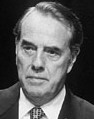

[Temaside] [Faktaservice nr. 7]
Faktaservice nr. 7 95/96, FEBRUAR 1996PRESIDENTVALG I USA 5. NOVEMBER:
Omstendelig og lang prosess
12. februar startet offisielt kampen om hvem som skal bli president Bill Clintons utfordrer ved presidentvalget. Ni republikanere kjemper om æren.

Senator Bob Dole fikk 26 prosent av de i alt 110 000 stemmene ved valget i Iowa 12. februar.Fordi president Bill Clinton er uten noen seriøs motkandidat innen demokratenes rekker, er all oppmerksomhet i år konsentrert om kappestriden innen Det republikanske parti.
Denne striden vil bli avgjort i en serie partilagsvalg ("caucuses") og primærvalg, der de enkelte delstater velger sine utsendinger til republikanernes nominasjonsmøte i San Diego fra 12. til 15. august.
1990 delegater
I partilagsvalgene kan ethvert partimedlem stille til møte i sin valgkrets. Der får de anledning til å debattere partiets politikk og program, og de stemmer på utsendinger til landsmøtet i San Diego. De som ønsker å bli valgt til utsendinger, har på forhånd gjort det klart hvem de ønsker å nominere som partiets presidentkandidat.Bare et fåtall stater praktiserer en slik form for delegatutvelgelse. Fordi denne prosessen forutsetter fremmøte og deltagelse på et tidsfestet møte, anses den som mer lukket enn primærvalgene. Bare de mest entusiastiske tar seg tid til å møte opp.
I primærvalgene er hovedregelen at den kandidat som får flest stemmer i den enkelte delstat, er sikret støtte fra samtlige av denne statens utsendinger til landsmøtet. I enkelte delstater kan bare republikanske velgere avlegge stemme ved det republikanske primærvalget, i andre delstater kan enhver registrert velger stemme. Fordi denne ordningen ligner på et vanlig valg, med valglokaler som er åpne hele dagen, anses den mer demokratisk enn partilagsnominasjonen.
Totalt skal denne prosessen peke ut de 1990 delegatene til landsmøtet i august. For å være sikret nominasjon, må en kandidat dermed ha støtte fra 996 utsendinger. Dersom ingen klarer å sikre seg slik støtte gjennom nominasjonsprosessen, blir det landsmøtets oppgave å avgjøre hvem som skal representere partiet.
Tre grupper
Ni kandidater kjemper i år om den republikanske nominasjonen, og det er naturlig å inndele dem i tre grupper:For det første den erfarne senator Bob Dole, som lenge har vært ansett som republikanernes fremste utfordrer til Clinton. Dole må vinne de innledende nominasjonsoppgjørene, og helst med klart forsprang. Alt annet vil bli tolket som et nederlag.
For det andre tidligere guvernør Lamar Alexander, "synseren" Pat Buchanan, mangemillionæren Steve Forbes og sentator Phil Gramm. Den eller de som havner lenger nede på listen enn en annen- eller tredjeplass i de første avstemningene, kan trolig oppgi håpet om nominasjonen.
For det tredje de fire øvrige, som ikke gis muligheter til å hevde seg. Uten gode plasseringer vil de dertil miste støtte fra sine økonomiske bidragsytere; de fleste kommentatorer regner derfor med at Bob Dornan, Alan Keyes, Richard Lugar og Morry Taylor raskt vil forsvinne ut i glemselen.
Faktaservice følger valget.
Kilde: Reuter og Per A. Christiansen, Aftenposten
[Innhold] [Info] [Aftenposten hjemmeside] [Til Fakta hovedside]